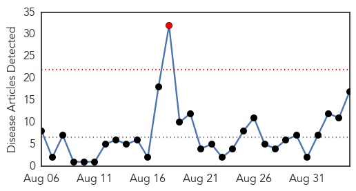
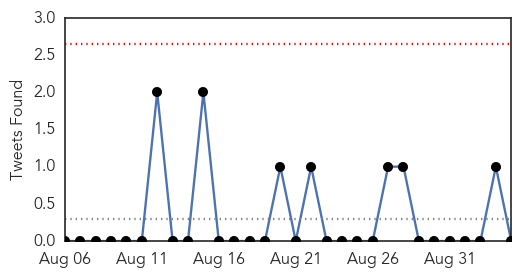

Cholera
30-Day Web Trend
1 alerts, 0 warnings

30-Day Twitter Trend
0 alerts, 0 warnings

Article Locations

Article Confidences

Top Articles:
- 0.995
- South Sudan Cholera admissions fall substantially
- 0.995
- South Sudan: Cholera admissions fall substantially
- 0.995
- Database of Press Releases related to Africa - APO-Source
- 0.984
- Health institutions, gov’t disagree over free cholera treatment
- 0.983
- Cholera: Asante Mampong on red alert as schools resume
- 0.982
- Blame Mahama for cholera deaths
- 0.973
- In South Sudan, Deadly Kala Azar on the Rise
- 0.972
- Health institutions, gov't disagree over free cholera treatment
- 0.967
- In South Sudan, Deadly Kala Azar on the Rise
- 0.967
- In South Sudan, Deadly Kala Azar on the Rise
- 0.967
- In South Sudan, Deadly Kala Azar on the Rise
- 0.967
- In South Sudan, Deadly Kala Azar on the Rise
- 0.967
- In South Sudan, Deadly Kala Azar on the Rise
- 0.967
- In South Sudan, Deadly Kala Azar on the Rise
- 0.785
- Database of Press Releases related to Africa - APO-Source
- 0.779
- Ethiopia: Refugees attempt to survive in flooded camps
- 0.776
- Blame Ghanaians for cholera outbreak – GMA
Top Tweets:
-
No tweets found for Sep 04, 2014
Dengue Fever
30-Day Web Trend
0 alerts, 0 warnings

30-Day Twitter Trend
1 alerts, 0 warnings

Article Locations

Article Confidences

Top Articles:
- 0.998
- Siberian Medical Scientists to Help Asian Colleagues Fight Dangerous Infections
- 0.994
- Amid Ebola, Progress on Another Epidemic
- 0.983
- Japan Battles With Dengue Outbreak In Tokyo; Yoyogi Park Closed
- 0.972
- Fuad: No reason to close schools in Belmont after CHIKV confirmed
- 0.953
- the edge of knowledge
- 0.914
- Dengue vaccine Phase III trial shows good results
- 0.906
- Severe strain of dengue causes spike in deaths, says paper
- 0.886
- First Dengue Vaccine Set to be Available in 2015
- 0.769
- Dengue vaccine shows promise in Latin America
- 0.747
- Final Trial Confirms Efficacy of Dengue Vaccine
Top Tweets:
-
No tweets found for Sep 04, 2014